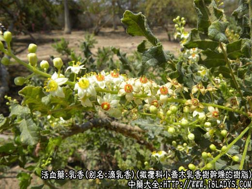
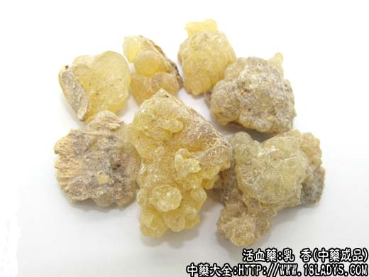
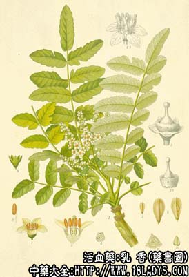

乳香为常用中药。始载《名药别录》，列为上品，原名熏陆乳香。乳香因垂滴如乳头，气味芳香而得名。
别名：滴乳香。
来源：为橄榄科植物小乔木或乔木卡氏乳香树鲍达乳香树及野乳香树等干燥的树脂。野生或栽培。
产地：主产于非洲东北部索马里、埃塞俄比亚及阿拉伯半岛南部，此外，土耳其，利比亚、苏丹等亦产。
性状鉴别：树脂呈长卵形，滴珠状，或粘合成不规则块状，直径0.5～3厘米。表面黄白色，半透明，少数棕黑色，不透明，久存则变棕黄色，被有一层白粉。质坚而脆。断面蜡样，无光泽或稍有光泽。微有香气， 味苦。嚼之初则有砂砾感，继则软化成乳白色软胶树，粘附牙齿，唾液成为乳汁状。
以淡黄色，滴珠状，断面半透明，质坚硬而脆，香气浓厚者为佳。
主要成分：含乳香脂酸，乳香脂烃，乳香次酸，乳香酸等。另含发挥油，主要为蒎烯。
功效与作用：活血止痛舒筋，其作用可能为镇痛和消炎。又对小白鼠实验性结核病有疗效。
炮制：醋炒。
性味：苦、辛、温。
归经：入心、肝、脾经。
功能：活血止痛，消肿生肌。
主治：瘀血心腹诸痛，痹痛筋挛，痈疽肿痛，跌打损伤，疮疡溃烂。
1、用于血瘀疼痛，取其有镇痛作用。
如为跌打损伤，尤其胸腹挫伤后瘀血作用，须配其他活血药内服和外用。如属新伤出血作痛，可炒炭后用（乳香炭、没药炭），但乳香、没药总以生用为好，炒炭后止痛力较差。
如为血脉瘀滞而致的四肢疼痛，例如血栓闭塞性脉管炎，可用乳香、没药作为辅助药，配四妙勇安汤（此方见玄参项下），或配毛冬青、鸡血藤、老桑枝、炙甘草等。
如为心血瘀阻而致的心绞痛，也可用乳香、没药。前人已观察到乳香、没药有治疗“心腹血瘀作痛”的作用。近年来的实践证实了乳香、没药在治疗冠心病所致的心绞痛中，确有一定作用。据报道，在使用活血祛瘀方剂的 基础上，加用乳香、没药，可加强活血镇痛作用，进一步提高心绞痛的疗效，参考绞窄样痛或刀割样痛尤为适用，可在煎剂内加入乳香、没药各9g同煎，或用乳没片。
2、用于筋肉拘挛，取其有活血镇痛而缓解肌肉挛缩（舒筋活络）的作用。凡属血气瘀滞而致的筋肉拘挛、疼痛麻木、活动不灵，不论其原因为跌打损伤、风湿或血循环障碍，都可在活络方剂内加入乳香、没药，例如对风湿或脑血管 意外后的手足拘挛、关节疼痛，表现有明显的寒湿症状者，可用乳香、没药配川乌、草乌、胆南星、地龙等，方如小活络丸。
3、用于治疗痈疽。适于初起有肿痛，脓尚未成熟者，常配没药、雄黄、麝香等制成醒消丸内服，可消肿止痛。
4、外服促进伤口愈合。因外伤或感染而发生患部破溃，伤口久不愈合时，可用乳香末敷贴，或用乳香煎油外搽，又可配没药末（如海浮散）撒敷伤口，或再加盖其他药膏。有生肌止痛作用。
用量：3～9g，大剂用至15g，外用适量，注意消毒。
处方举例：1、乳没片（北京地区防治冠心病协作组）：每6片含乳香1.5g，没药1.5g，每服2片，每日3次。
2、小活络丸（成药）《惠民和剂局方》：含乳香、没药、川乌、草乌、地龙、胆南星，每次1丸，每日1～2次。
3、醒消丸（成药）《局方》：含乳香、没药、麝香、雄黄 等，每服3～6g，每日2次，温开水宋下，或热黄酒送下。
4、海浮散《外科十法》：制乳香、制没药等等分，共研极细末，外用。
注：1、过去索马里、埃塞俄比亚所产的乳香、大部分由亚丁输出，经印度转口至香港、由港商加工分档后运销我国，一般有原乳香、乳香珠、上乳香等。现在已由产地直接进口，产地乳香有两种，分为拜药乳香和 美蒂乳香。前者主产索马里，后者主产埃塞俄比亚，因两国接壤乳香树种互有传引不能以国界划分。我国习用的乳香应为拜药乳香，即正文所述品种。美蒂乳香商品形态与拜药乳香基本相同，唯体略轻、质稍软，淡黄白色，表面不被白 色粉霜，断面透明，粘性较大，气微，味淡而不苦。用于制造糖果、香料及油漆，有时也作药用。
2、乳香与白胶香（枫香脂）形色相似，外观不易区分，但用火试或水试可以区分。
①火试：乳香烧之微有香气，溶化蛮，滴坨少；枫香烧之香气浓郁，溶化快，滴坨多。
②水试：乳香投入带水的烧杯中，表面吸水后变乳白色，放火上加温至100℃乳香溶融，使水变乳白色；枫香脂，投入带水的烧杯中，不吸水，不变色，放火上加温至100℃，枫香略软化，但不溶于水，水仍澄清清澈。